Single cell/bulk RNA-Seq concordance
Table of Contents
Setup
sbatch $RESOURCES --job-name=ipython3 --output=ipython3.out #!/bin/bash source activate scqtl rm -f $HOME/.local/share/jupyter/runtime/kernel-aksarkar.json ipython3 kernel --ip=$(hostname -i) -f kernel-aksarkar.json
%matplotlib inline import matplotlib.pyplot as plt import numpy as np import pandas as pd import scipy.stats as sst
Read the data
def load_umi_data(min_cell_count=5): annotations = pd.read_table('/home/aksarkar/projects/singlecell-qtl/data/scqtl-annotation.txt') counts = pd.read_table('/home/aksarkar/projects/singlecell-qtl/data/scqtl-counts.txt.gz', index_col=0) keep_individuals = annotations['chip_id'].value_counts() > min_cell_count keep_cells = annotations.apply(lambda x: keep_individuals.loc[x['chip_id']], axis=1) annotations = annotations.loc[keep_cells.values] counts = counts.loc[:,keep_cells.values] return counts, annotations, keep_individuals def pool_by_individual(umi, annotations): umi = umi.copy() umi.columns = annotations['chip_id'] return umi.groupby(level=0, axis=1).agg(np.sum) def load_bulk_data(keep_individuals): counts = pd.read_table('/project2/gilad/data/iPSC/counts_RNAseq_iPSC.txt', header=0, index_col=0, sep=' ') counts.index = [k.split('.')[0] for k in counts.index] counts.columns = ['NA{}'.format(k) for k in counts.columns] counts = counts.filter(items=keep_individuals[keep_individuals].index) return counts def load_normed_bulk_data(keep_individuals): counts = pd.read_table('/project2/gilad/data/iPSC/qqnorm_RNAseq_run.fixed.txt.gz', header=0, index_col=3) counts.index = [k.split('.')[0] for k in counts.index] counts.columns = ['NA{}'.format(k) for k in counts.columns] counts = counts.filter(items=keep_individuals[keep_individuals].index) return counts
umi, annotations, keep_individuals = load_umi_data() pooled = pool_by_individual(umi, annotations) bulk = load_bulk_data(keep_individuals) normed_bulk = load_normed_bulk_data(keep_individuals) umi.shape, pooled.shape, bulk.shape, normed_bulk.shape
((20327, 2261), (20327, 22), (14034, 20), (14034, 21))
Discrepancies
One individual has normalized bulk expression but not bulk counts:
set(normed_bulk.columns) - set(bulk.columns)
{'NA19092'}
One individual has single cell expression but not bulk expression
set(pooled.columns) - set(normed_bulk.columns)
{'NA19203'}
Plot bulk count vs. UMI count per individual
def plot_concordance(umi, bulk, xlabel, ylabel, output_dir): for k, y in bulk.groupby(level=0, axis=1): x = umi.loc[y.index,k] plt.clf() plt.scatter(x.values, y.values, alpha=0.25) plt.plot([0, y.max()], [0, y.max()]) plt.title(k) plt.xlabel(xlabel) plt.ylabel(ylabel) plt.savefig('{}/{}.png'.format(output_dir, k))
plot_concordance(pooled, bulk, 'Pooled UMI count', 'Bulk RNA-Seq count', 'figure/sc-vs-bulk.org/counts')
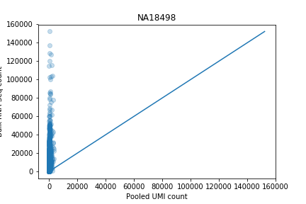 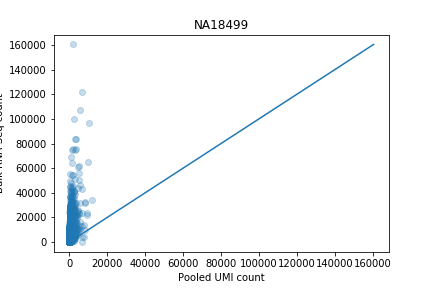 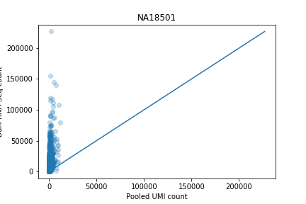 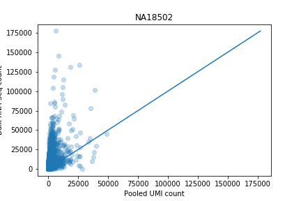 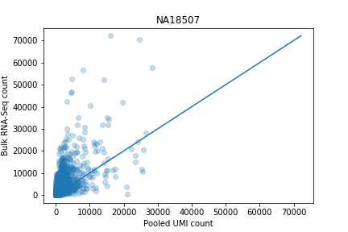 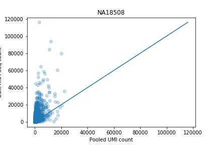 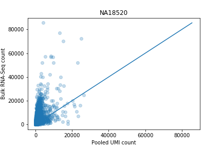 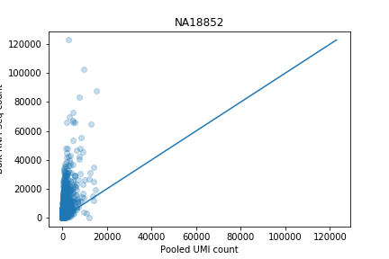 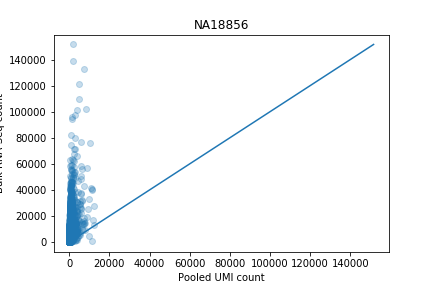 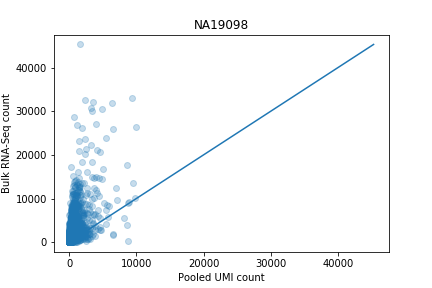 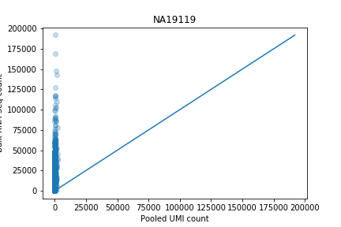 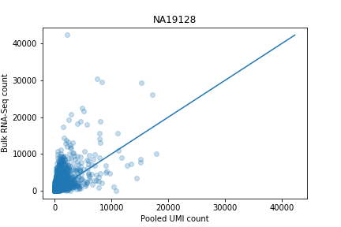 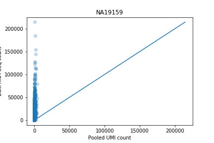 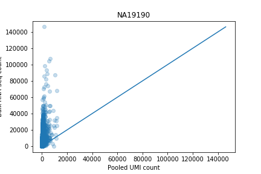 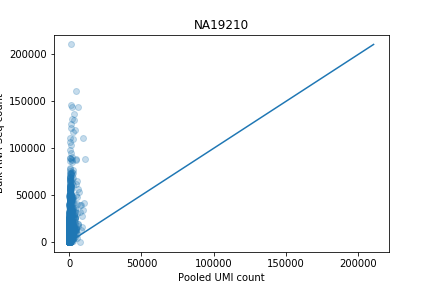 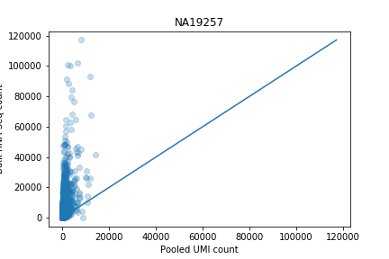
Plot normalized bulk vs. normalized UMI count
Performing bulk RNA-Seq normalization on the pooled UMI data does not give a reasonable result.
def normalize(pooled): # Standardize across individuals pooled -= pooled.mean(axis=0) pooled /= pooled.std(axis=0) # Quantile normalize within individuals N = sst.norm() return pooled.apply(lambda x: N.ppf(x.rank() / len(x)), axis=0)
normed = normalize(pooled) plot_concordance(normed, normed_bulk, 'Normalized pooled UMI count', 'Normalized bulk expression', 'figure/sc-vs-bulk.org/normed')
 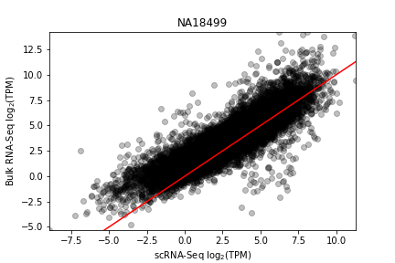
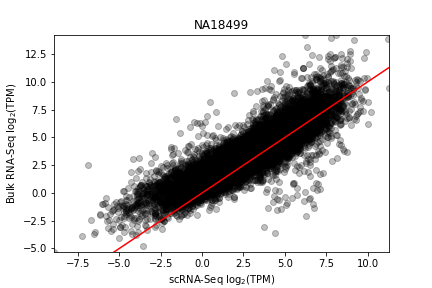


 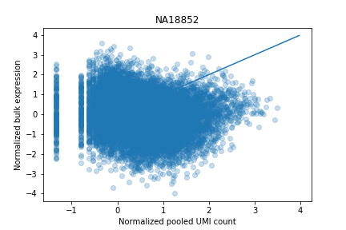
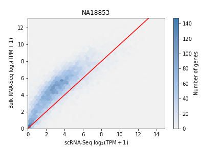
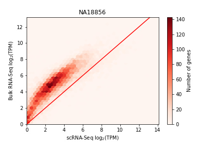
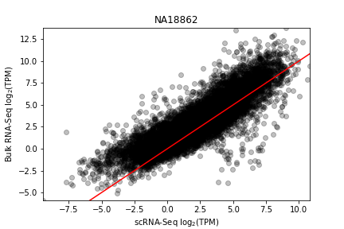
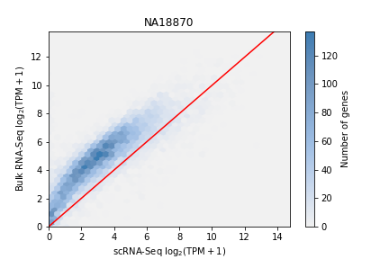
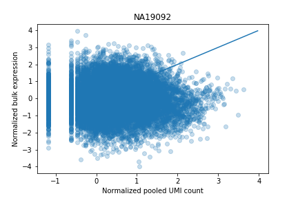
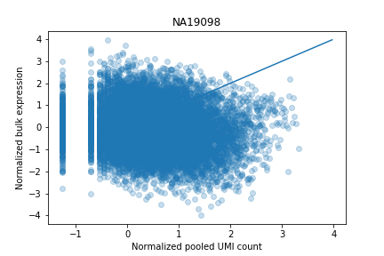
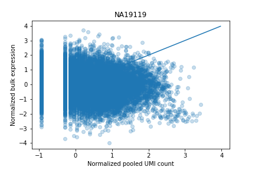
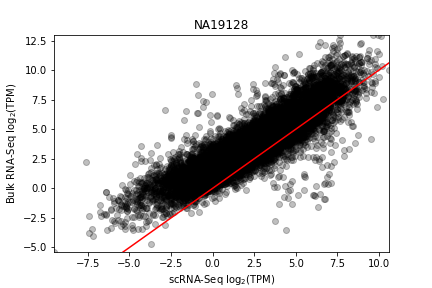
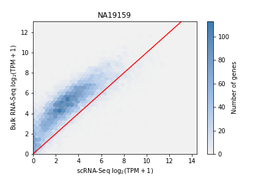
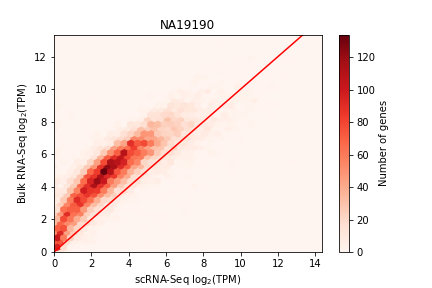
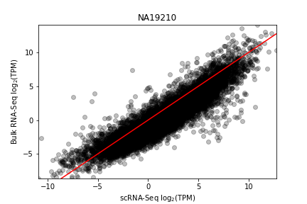
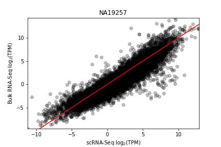
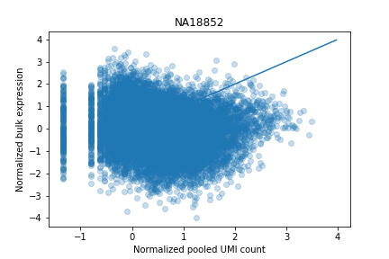
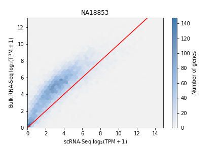
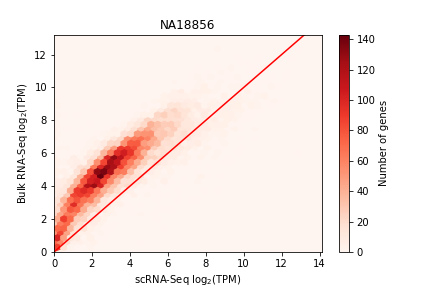
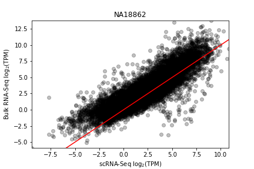
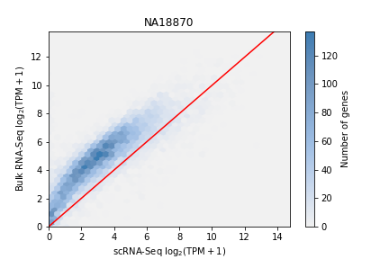
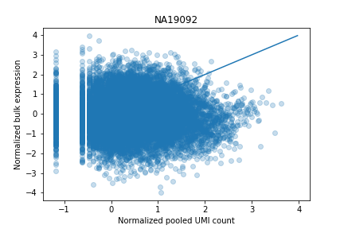
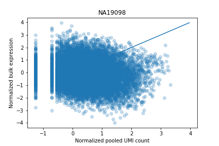
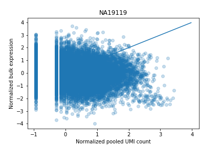
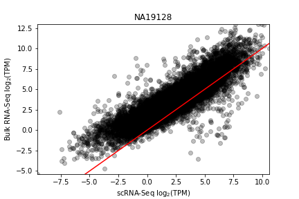
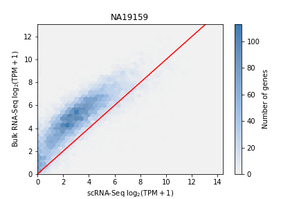
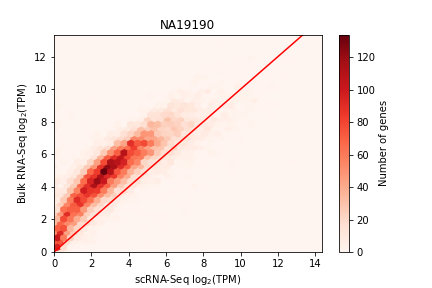
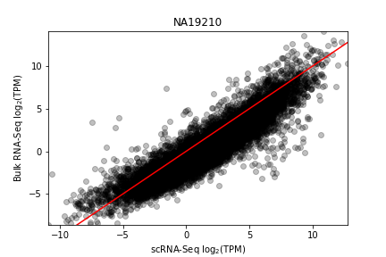
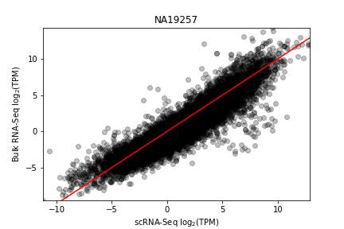